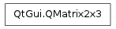

QMatrix2x3 ¶

Note
This class was introduced in Qt 4.6
Synopsis ¶
Detailed Description ¶
- class PySide.QtGui. QMatrix2x3 ( arg__1 ) ¶
- class PySide.QtGui. QMatrix2x3 ( QMatrix2x3 )
-
Parameters: - QMatrix2x3 – PySide.QtGui.QMatrix2x3
- arg__1 – PySequence
- PySide.QtGui.QMatrix2x3. __reduce__ ( ) ¶
-
Return type: PyObject
- PySide.QtGui.QMatrix2x3. __repr__ ( ) ¶
-
Return type: PyObject
- PySide.QtGui.QMatrix2x3. data ( ) ¶
-
Return type: PySide.QtCore.qreal
- PySide.QtGui.QMatrix2x3. fill ( arg__1 ) ¶
-
Parameters: arg__1 – PyObject
- PySide.QtGui.QMatrix2x3. __ne__ ( arg__1 ) ¶
-
Parameters: arg__1 – PySide.QtGui.QMatrix2x3 Return type: PySide.QtCore.bool
- PySide.QtGui.QMatrix2x3. __imul__ ( arg__1 ) ¶
-
Parameters: arg__1 – PySide.QtCore.qreal Return type: PySide.QtGui.QMatrix2x3
- PySide.QtGui.QMatrix2x3. __iadd__ ( arg__1 ) ¶
-
Parameters: arg__1 – PySide.QtGui.QMatrix2x3 Return type: PySide.QtGui.QMatrix2x3
- PySide.QtGui.QMatrix2x3. __isub__ ( arg__1 ) ¶
-
Parameters: arg__1 – PySide.QtGui.QMatrix2x3 Return type: PySide.QtGui.QMatrix2x3
- PySide.QtGui.QMatrix2x3. __idiv__ ( arg__1 ) ¶
-
Parameters: arg__1 – PySide.QtCore.qreal Return type: PySide.QtGui.QMatrix2x3
- PySide.QtGui.QMatrix2x3. __eq__ ( arg__1 ) ¶
-
Parameters: arg__1 – PySide.QtGui.QMatrix2x3 Return type: PySide.QtCore.bool
- PySide.QtGui.QMatrix2x3. transposed ( ) ¶
-
Return type: PyObject